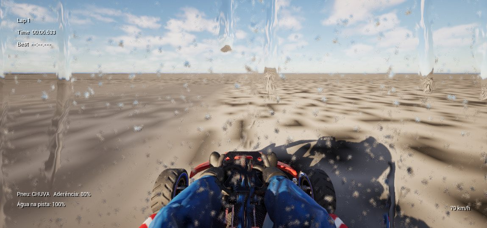
CLIMA
Sol, encoberto, neblina, chuva leve e chuva forte
Cada sessão tem o seu clima. A pista molhada muda a frenagem, a água espirra na lente e o pneu certo faz toda a diferença.
REELED STUDIOS APRESENTA
Kart, shifter e fórmula com física de verdade. Chuva, neblina, pit stop e uma IA que aprendeu a pilotar. Feito no Brasil.
KartX é o nosso jogo de corrida: do kart de aluguel ao monoposto turbo, cada veículo tem física própria — peso, aderência, câmbio e freio que você sente no volante. Treine sozinho contra o seu fantasma, encare um fim de semana completo com classificação, ou divida o kart com um amigo: um no volante, o outro nos pedais.
Os pilotos adversários não seguem trilhos: a IA do KartX foi treinada com aprendizado por reforço, volta após volta, até aprender a frear, ultrapassar e defender posição.
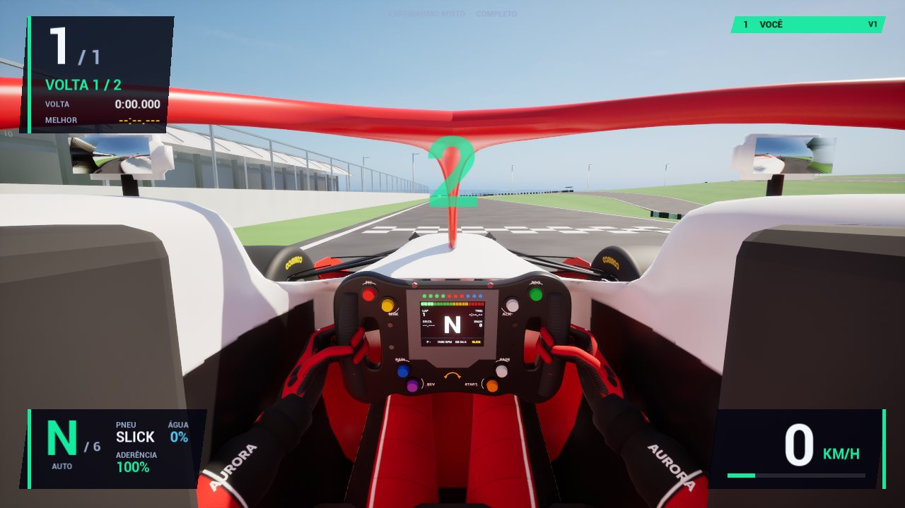
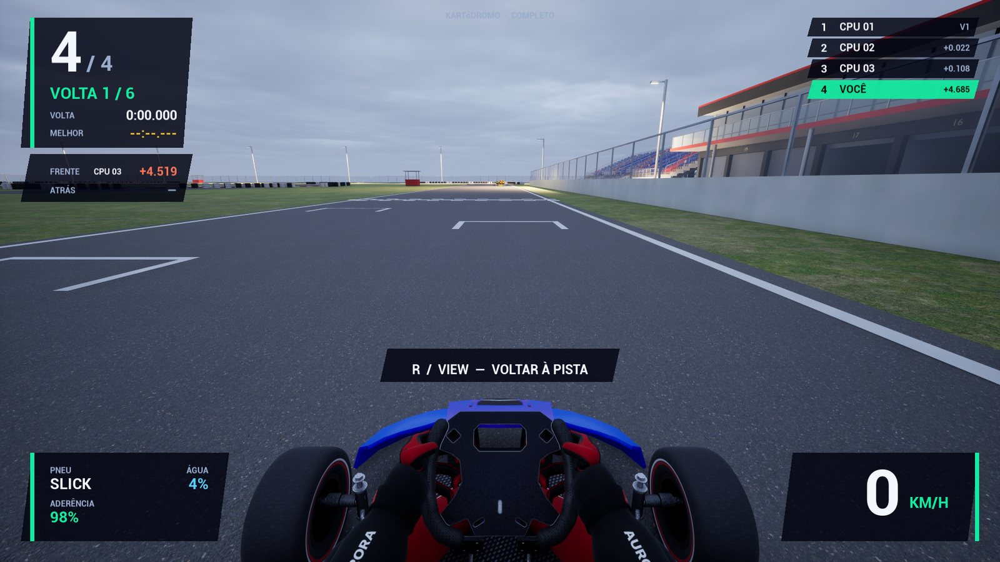
A ABERTURA
A abertura do KartX foi renderizada dentro do próprio jogo — e virou um modo: no Modo Anime a corrida inteira é desenhada em tinta e papel, com os karts em cor e linhas de velocidade.
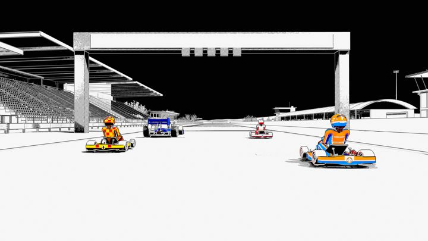
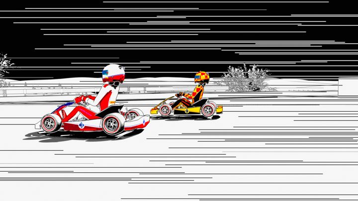
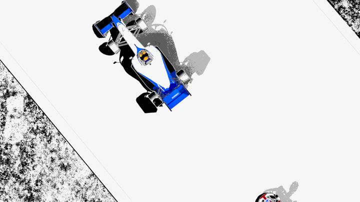
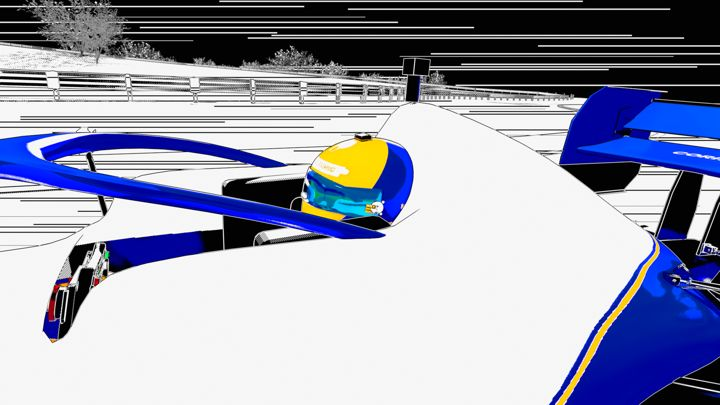
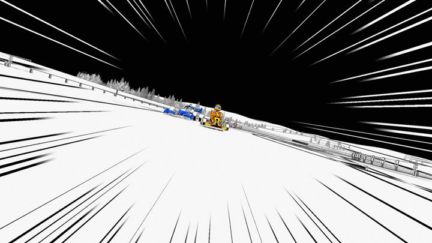
03 · KART
Use as setas ou o mouse. Igualzinho ao menu do jogo.
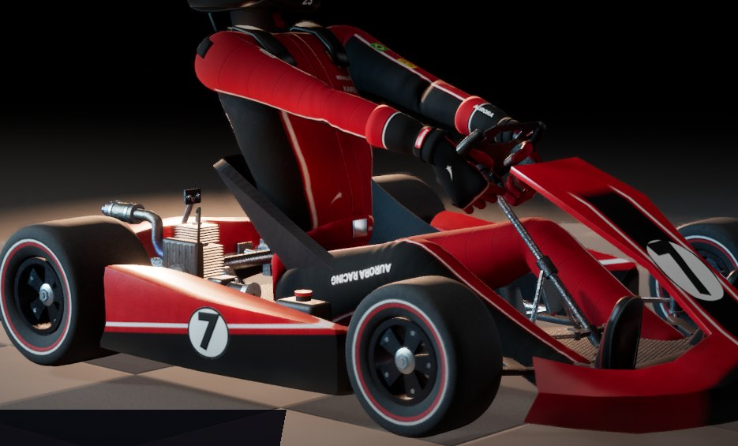
Motor 2 tempos · 1 marcha
Kart de referência: leve, direto e previsível.
MODOS DE JOGO
Do contra-relógio ao endurance de 6 horas com troca de piloto no pit.
01 · PISTA
13 circuitos e 104 layouts — de kartódromos a um aeroporto inteiro, de Salvador ao Japão.
CIRCUITO
NA PISTA

Cada sessão tem o seu clima. A pista molhada muda a frenagem, a água espirra na lente e o pneu certo faz toda a diferença.
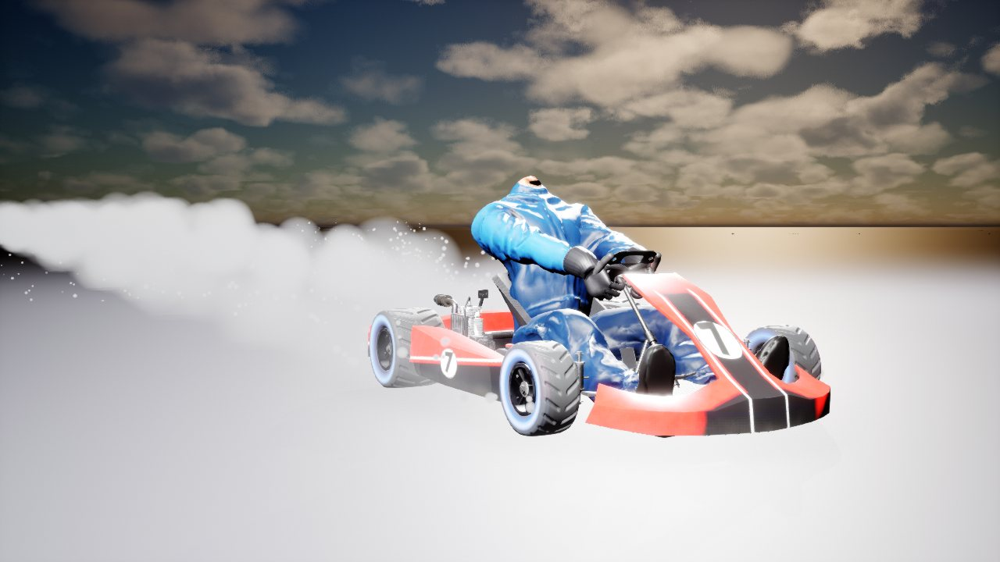
Slick para aderência no seco, chuva para perder menos no molhado — e até pista de gelo.
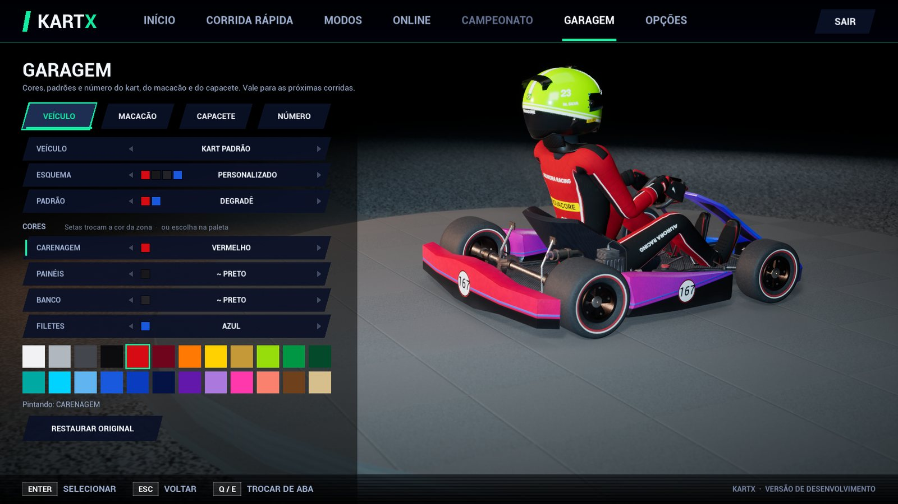
Monte a sua identidade: cores, padrões e capacete do seu piloto.
Rivais treinados com Learning Agents (aprendizado por reforço) usam os mesmos comandos que você: volante, acelerador e freio.
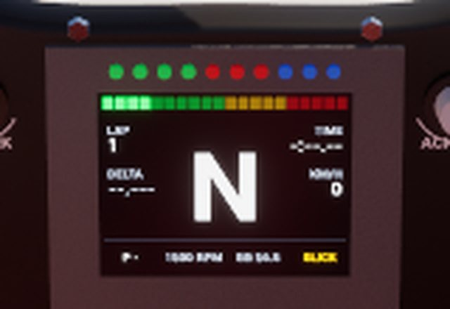
Marcha, RPM, delta e tempo de volta direto no volante.
Tela dividida no sofá ou lobby online. Endurance em dupla com troca de piloto no pit.
CAPTURAS DO JOGO
O ESTÚDIO
Somos um estúdio brasileiro de videogames independente. A gente faz jogos que dá vontade de jogar de novo: rápidos de entender, difíceis de dominar e cheios de detalhe.
Peso, aderência e câmbio de verdade. Cada veículo é ajustado em bancada de testes até a pilotagem ficar honesta.
Nosso jogo tem sotaque brasileiro — e tem até circuito em Salvador.
Unreal Engine 5, Chaos Vehicles, Nanite e IA treinada com Learning Agents.
Imprensa, parcerias, criadores de conteúdo ou só pra dizer oi: fale com a Reeled Studios.